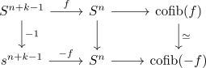
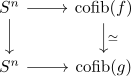
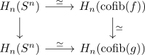
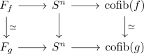
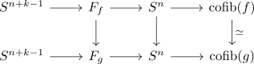
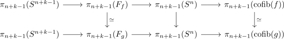
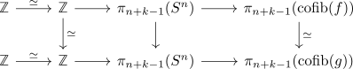
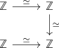
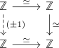
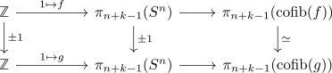

classification of CW complexes with three cells
Proposition
Let $k,n \in \mathbb{N}$, then depending on $k$ and $n$ there exist the following CW-Complexes with cells in dimension $0,n,n+k$:
- exactly $S^n \vee S^n$ if $k = 0$
- exactly $\mathbb{N}_0$ many, namely $M(\mathbb{Z}/l \mathbb{Z}, n)$ for $l \in \mathbb{N}_0$ if $k = 1$
- exactly $\pi_{n+k-1}(S^n)_{C_2}$ many in either case, where this denotes the set-theoretic quotient of $\pi_{n+k-1}(S^n)$ modulo the sign action (in particular, not the group theoretic quotient)
Proof
1)
follows from $\mathrm{Hom}_{\mathrm{An}_*}(S^n \vee S^n, *) \simeq *$
2)
classification of cw complexes with a single cell in dimension n, n+1
3)
It remains to show the case of $k \geq 2$:
using something similar to: classification techniques for low cell cw complexes Observe that any such three cell cw complex arises as cofiber of an element $f \in \pi_{n+k-1}(S^n)$.
Moreover, $\mathrm{cofib}(f)$ and $\mathrm{cofib}(-f)$ induce homotopy equivalent cw-complexes:

since both vertical maps are homotopy equivalences
Now assume that we have two maps $f,g$ and a homotopy equivalence $\mathrm{cofib}(f) \simeq \mathrm{cofib}(g)$. Then using CW-Approximation we get a diagram

and since $k \geq 2$, the inclusion $S^n \rightarrow \mathrm{cofib}(f)$ induces an isomorphism $\mathbb{Z} \simeq H_n(S^n) \xrightarrow{\simeq} H_n(\mathrm{cofib}(f)) \simeq \mathbb{Z}$.
In particular the map $\mathrm{cofib}(f) \simeq \mathrm{cofib}(g)$ is also an equivalence, so we get a diagram

which shows that the map $S^n \rightarrow S^n$ is an equivalence (cf. homology isomorphism between simply connected spaces as weak equivalence).
So now we take the fibers

where both fibers are equivalent, since both morphisms $S^n \rightarrow \mathrm{cofib}(f), S^n \rightarrow \mathrm{cofib}(g)$ are equivalent in the arrow category. Furthermore, we get induced maps from $S^{n+k-1} \rightarrow F_f, S^{n+k-1} \rightarrow F_g$ since the compositions $S^{n+k-1} \rightarrow S^n \rightarrow \mathrm{cofib}(f), S^{n+k-1} \rightarrow S^n \rightarrow \mathrm{cofib}(f)$ are nullhomotopic

In particular, the relative hurewicz theorem (cf. relative hurewicz theorem for the homotopy fiber / long exact sequence of homotopy groups for a homotopy cofibration sequence) shows - if I haven't messed up indices/index conventions - that the maps
are $n+k$ connected, so in particular induce isomorphisms on $\pi_{n+k-1}(-)$.
This yields a diagram

or

Now recall that the map $f$ ($g$) is precisely the element in $\pi_{n+k-1}(S^n)$ which is the image of the prefered generator in $\pi_{n+k-1}(S^{n+k-1}) \simeq \mathbb{Z}$. Now in particular

commutes, and the composite (after taking the inverse of the bottom horizontal map) is given by a map

In particular,
and

commute, which shows that $f = \pm g$ as elements in $\pi_{n+k-1}(S^n)$.